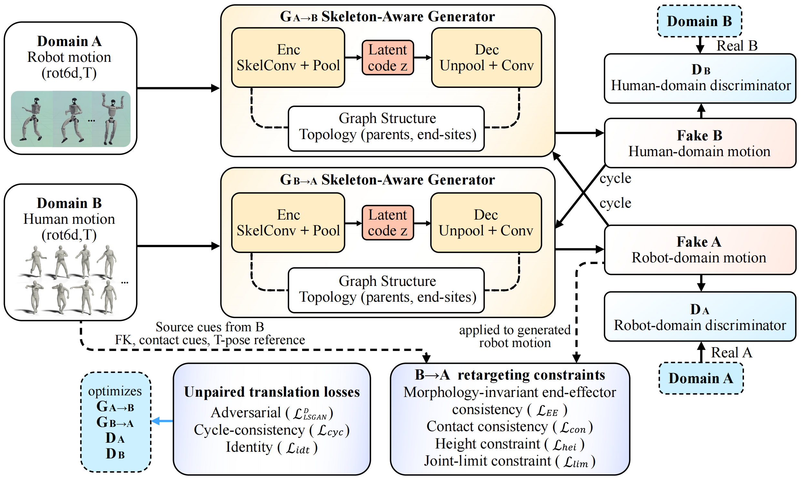
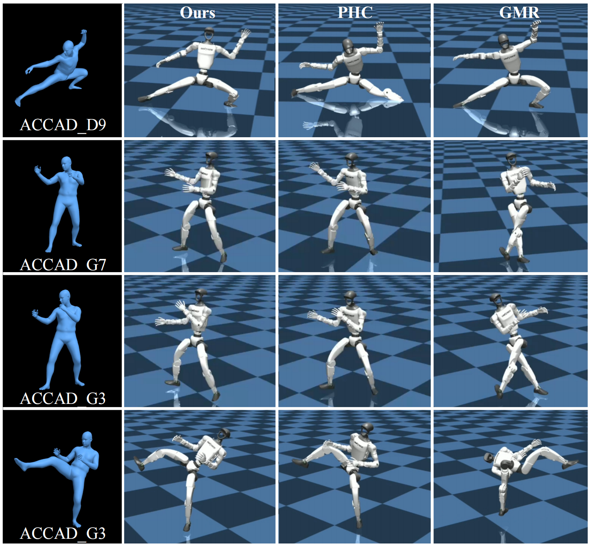

Skeleton-aware generators
Graph convolutional layers operate on each embodiment's native kinematic topology instead of flattening poses into joint vectors.
Unsupervised human-to-humanoid motion transfer with skeleton-aware learning, morphology-invariant end-effector consistency, and deployability-oriented physical constraints.
Institute of Humanoid Robots, Department of Precision Machinery and Precision Instrumentation, University of Science and Technology of China
Retargeting human motion to humanoid robots is critical for teleoperation, imitation learning and human-robot interaction. However, it remains challenging because of substantial morphological discrepancies between humans and robots, including differences in skeletal topology, limb proportions and degrees of freedom, as well as the scarcity of paired motion data. This paper presents Human2Humanoid, an unsupervised motion retargeting framework that transfers human motions to humanoid robot behaviors with high fidelity.
To bridge the domain gap under unpaired data, we adopt a CycleGAN-based architecture equipped with a skeleton-aware graph convolutional network to capture topology-dependent motion features. To address cross-domain scale mismatches, we introduce a morphology-invariant end-effector consistency loss that aligns normalized end-effector trajectories to preserve motion semantics across embodiments. To improve physical plausibility and reduce contact artifacts, we impose explicit physics-aware feasibility constraints to encourage reproduction of the contact patterns in the source motion. Experimental results show that the proposed method successfully retargets human motion to the Unitree G1 humanoid robot without paired data, and outperforms existing methods in both downstream controllability and physical feasibility.
Human2Humanoid learns bidirectional mappings between unpaired human and robot motion domains while keeping the generated robot motion semantically faithful and physically trackable.

Graph convolutional layers operate on each embodiment's native kinematic topology instead of flattening poses into joint vectors.
A CycleGAN-style objective learns human-to-robot and robot-to-human mappings without frame-wise motion correspondence.
End-effector trajectories are normalized by embodiment-specific scale, preserving hands and feet motion semantics across different body proportions.
Contact, foot-height and joint-limit constraints reduce foot skating, floating, penetration, and unsafe robot configurations.
Evaluation is conducted on human motions from Motion-X and Unitree G1 motions from PHUMA, using a fixed downstream tracking policy for fair comparison.
| Method | SR (%) ↑ | TE ↓ | FS (%) ↓ | GP (cm) ↓ |
|---|---|---|---|---|
| GMR | 86.9 | 0.14 | 6.8 | 0.12 |
| PHC | 32.7 | 0.22 | 1.4 | 0.11 |
| Unitree Retarget | 71.2 | 0.19 | 11.1 | 0.35 |
| Human2Humanoid | 88.5 | 0.12 | 4.7 | 0.05 |

@misc{huang2026human2humanoid,
title = {Human2Humanoid: Physics-Aware Cross-Morphology Motion Retargeting for Humanoid Robots},
author = {Tianchen Huang and Feiyang Yuan and Junchi Gu and Shurui Fang and Xiaohu Zhang and Yu Wang and Wei Gao and Shiwu Zhang},
year = {2026},
eprint = {2606.03476},
archivePrefix = {arXiv},
primaryClass = {cs.RO},
url = {https://arxiv.org/abs/2606.03476}
}